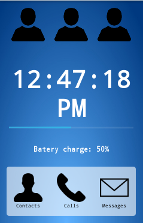
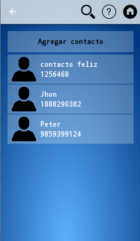
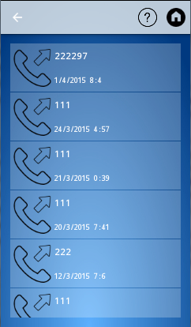
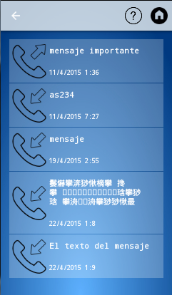

Movilfacil help
Here you can learn how to use the Movilfacil app
Home screen
From here you can navigate to everything in your phone

- Pressing contacts from here you can see all your saved phones, for more information go to contacts
- Pressing messages you can see all your received and sent messages
- Pressing calls you will see all the incoming and outgoing calls of your phone
In this screen you can see peoples names and their phone numbers

- By pressing add contact you can add a name with a telephone number
- By pressing a contact it will appear the following options:
- Call will make a phone call to the contact number
- Message will allow you to send said contact a message
- Edit will let you change the number or the name of the contact
- Delete allows you to erase that contact
Calls
In this screen you can se both incoming and outgoing calls of your phone

- Call call to the same number of the call
- Message lets you send a message to the same number of the call
Messages
In this screen you can se both incoming and outgoing messages of your phone

- Call call to the same number of the call
- Message lets you send a message to the same number of the call